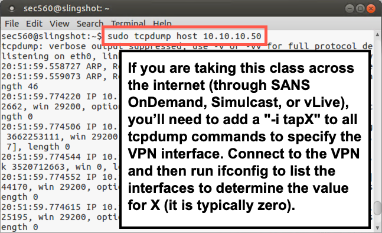
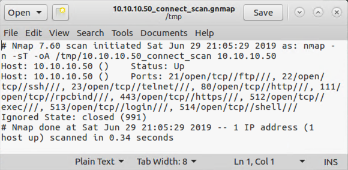
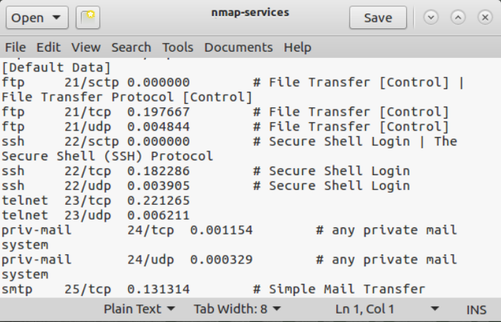

Lab 2.1: Nmap
Objectives
- To use Nmap to identify target machines by sweeping through a network range
- To specify port ranges in Nmap and analyze the Nmap-services file for determining more popular ports
- To conduct TCP and UDP port scanning and analyze the differences between the two
Table of Contents
Lab Setup
For this lab, please connect to the 560 network (for live students: the in-class network; for OnDemand, vLive, and Simulcast students: the 560A VPN).
You should be able to ping 10.10.10.10 from the Slingshot Linux image:
$ ping 10.10.10.10
Root Access
You will need root access for the majority of the lab. This is a reminder to be aware of the prompts. If you see a prompt containing #, it means the command is run as root. To become root, type the following command.
sec560@slingshot:~$ sudo su - root@slingshot:~#
You'll notice that after running the command, the prompt has changed. The user is now root and the $ changed to #. In the commands below, the prompt will simply be shown as # to save space.
Lab – Step-by-Step Instructions
1. Initial Scan
Let’s run a scan of the target subnet.
# nmap -n -sP 10.10.10.1-255 --packet-trace sec560@slingshot:~$ sudo nmap -n -sP 10.10.10.1-255 --packet-trace Starting Nmap 7.70 ( https://nmap.org ) SENT (0.0401s) ARP who-has 10.10.10.2 tell 10.10.75.102 SENT (0.0405s) ARP who-has 10.10.10.3 tell 10.10.75.102 SENT (0.0408s) ARP who-has 10.10.10.4 tell 10.10.75.102 SENT (0.0412s) ARP who-has 10.10.10.5 tell 10.10.75.102 SENT (0.0415s) ARP who-has 10.10.10.6 tell 10.10.75.102 SENT (0.0418s) ARP who-has 10.10.10.7 tell 10.10.75.102 SENT (0.0421s) ARP who-has 10.10.10.8 tell 10.10.75.102 SENT (0.0424s) ARP who-has 10.10.10.9 tell 10.10.75.102 SENT (0.0426s) ARP who-has 10.10.10.10 tell 10.10.75.102 ... truncated for brevity ...
The -n means that Nmap should not resolve domain names. The -sP means do a ping sweep, but watch what happens ... no ICMP (or TCP packets for that matter) will be sent for the ping sweep. Also, the --packet-trace option tells Nmap to display a summary of each packet before it sends it. While it runs, pressing Shift-p turns this off, whereas pressing the p key toggles it back on.
Also, try hitting the v and d keys multiple times each for verbosity and debug information, respectively. If you can’t type that fast enough, try relaunching the scan and then pressing them.
Note that you are sending only ARPs, no ICMP or HTTP, despite the fact that you kicked off Nmap with a --sP for a "ping" sweep. Nmap did this because you are on the same subnets as the targets, so an ARP reply implies that the address is in use; no follow-up ICMP or TCP packets are required.
2. Scanning 10.10.10.50
Next, let’s conduct a TCP port scan of target machine 10.10.10.50.
Start tcpdump, configured to show traffic associated with host 10.10.10.50 (not resolving names). LAUNCH A NEW TERMINAL WINDOW SO YOU CAN RUN A SNIFFER IN IT TO OBSERVE YOUR PACKETS:
# tcpdump -nn host 10.10.10.50
NOTE: IF YOU ARE TAKING THIS CLASS ACROSS THE INTERNET THROUGH SANS vLive or OnDemand, you need to specify the VPN interface in all the tcpdump commands for the class. Connect through the VPN, and then run the ifconfig command to list interfaces, looking for an interface called tapX, where X is an integer (typically zero). Then, add
-i tapX(with the appropriate X) to all tcpdump commands.

Next, back in your original Nmap terminal window, invoke Nmap to scan that host, doing a TCP connect scan (full three-way handshake):
# nmap -n -sT 10.10.10.50 Starting Nmap 7.70 ( https://nmap.org ) Nmap scan report for 10.10.10.50 Host is up (0.00032s latency). Not shown: 991 closed ports PORT STATE SERVICE 21/tcp open ftp 22/tcp open ssh 23/tcp open telnet 80/tcp open http 111/tcp open rpcbind 443/tcp open https 512/tcp open exec 513/tcp open login 514/tcp open shell MAC Address: 00:0C:29:15:17:D6 (VMware) Nmap done: 1 IP address (1 host up) scanned in 0.33 seconds
Nmap displays the total time it takes to complete the scan. Record how long it took for the scan here: ______
Nmap did not scan all TCP ports with that invocation, however. It scanned only the top 1,000 most frequently used ports, as indicated in the nmap-services file. Let’s see how much longer it takes to scan all TCP ports:
# nmap -n -sT 10.10.10.50 -p 1-65535
It may take somewhat longer, given the higher number of ports it is scanning.
Also, look at the output of your sniffer. You should see a lot of SYN packets (S) going from your machine to the target, as well as a lot of RESETs (R) coming back. There will be a relatively smaller number of SYN-ACKs coming back, as well as ACKs going from your machine, to complete the three-way handshake.
3. Output Formats
Next, look at the output format files that Nmap can create via the -oA option. Rerun your -sT scan with the default port, storing your results in all the major format styles (-oA to indicate Normal, Greppable, and XML output). Store your results in files in the /tmp directory with a base name of 10.10.10.50_Connect_Scan, which indicates the scan type and the IP address of the target:
# nmap -n -sT 10.10.10.50 -oA /tmp/10.10.10.50_connect_scan
You should see the same number of open ports as the original scan.
Then get a list of the files associated with 10.10.10.50 inside of /tmp:
# ls /tmp/10.10.10.50* /tmp/10.10.10.50_connect_scan.gnmap /tmp/10.10.10.50_connect_scan.nmap /tmp/10.10.10.50_connect_scan.xml
You should see three files with the same base name but with a different extension:
- Greppable form with a
.gnmapsuffix - Normal form with a
.nmapsuffix - XML form with a
.xmlsuffix
Use the gedit tool to review these files, especially the greppable format:
# gedit /tmp/10.10.10.50_connect_scan.gnmap

Note that all the results for a given host are stored on one line with each open port and associated service identified. This format is easy to search using grep. If there were multiple hosts in the file, you could search for hosts listening on port 80 by running the command below:
grep ' 80/open/' file.gnmap
The quotes are necessary because there is a space before the port number and it allows you to only match 80, but not 8080.
4. Port Zero
By the way, in the TCP scans we just conducted, we omitted TCP port 0. Let’s test that one port with:
# nmap -n -sT 10.10.10.50 -p 0
Your output should look like the following:
# nmap -n -sT 10.10.10.50 -p 0 Starting Nmap 7.70 ( https://nmap.org ) Nmap scan report for 10.10.10.50 Host is up (0.00045s latency). PORT STATE SERVICE 0/tcp closed unknown MAC Address: 00:0C:29:15:17:D6 (VMware) Nmap done: 1 IP address (1 host up) scanned in 0.29 seconds
In the command above, we can see that port 0 is closed.
As we’ve seen, we can scan individual ports by just specifying -p X (where X is the port number we want to scan). We can do ranges of ports by specifying -p X-Y. And we can do individual sets of ports by using a comma-separated list. Try the last one by scanning:
# nmap -n -sT 10.10.10.50 -p 21,22,23,25,80,135,443,6000
Your output should look like the following:
# nmap -n -sT 10.10.10.50 -p 21,22,23,25,80,135,443,6000 Starting Nmap 7.70 ( https://nmap.org ) Nmap scan report for 10.10.10.50 Host is up (0.00036s latency). PORT STATE SERVICE 21/tcp open ftp 22/tcp open ssh 23/tcp open telnet 25/tcp closed smtp 80/tcp open http 135/tcp closed msrpc 443/tcp open https 6000/tcp closed X11 MAC Address: 00:0C:29:15:17:D6 (VMware) Nmap done: 1 IP address (1 host up) scanned in 0.29 seconds
5. The nmap-services File
Next, review the ports in the nmap-services file (the file from which Nmap gets its list of most frequent ports to scan) by running:
# gedit /usr/local/share/nmap/nmap-services

The format of this file includes the service name (for example, ftp), the associated port and protocol (for example, 21/tcp), the relative frequency with which the given port was discovered during Fyodor’s widespread internet scanning research, and an optional comment. Note that the ports themselves are typically TCP or UDP; however, some are associated with the Stream Control Transmission Protocol (SCTP), an alternative Layer 4 protocol defined by RFC 4960.
6. UDP Scanning
Now that you’ve looked at TCP port scanning with Nmap, try UDP port scanning. Remember, we discussed earlier that Linux kernels throttle ICMP port unreachable responses so that they send only one every second? You’ll see that behavior now because 10.10.10.50 is a Linux machine. Keep your tcpdump sniffer running, showing packets going to and from host 10.10.10.50.
Now invoke Nmap to perform a UDP port scan of 10.10.10.50, as follows:
# nmap -n -sU 10.10.10.50
In your sniffer output, you will likely see several UDP packets and some ICMP port unreachables sent periodically.
In your Nmap window, press the spacebar to get a status report. You will likely see that the scan is only a small percentage done, depending on your system speed and the network speed. If it is going very slowly, press CTRL-C to stop Nmap before the scan completes.
Your output will be similar to what is shown below:
# nmap -n -sU 10.10.10.50 Stats: 0:02:53 elapsed; 0 hosts completed (1 up), 1 undergoing UDP Scan UDP Scan Timing: About 18.54% done; ETC: 21:39 (0:12:40 remaining)
7. Targeted UDP Scan
Now rerun an Nmap UDP scan of the target, this time focusing on a narrower list of ports, as follows:
# nmap -n -sU 10.10.10.50 -p 53,111,414,500-501
Your output should be similar to what is shown below:
nmap -n -sU 10.10.10.50 -p 53,111,414,500-501 Starting Nmap 7.70 ( https://nmap.org ) Nmap scan report for 10.10.10.50 Host is up (0.00041s latency). PORT STATE SERVICE 53/udp closed domain 111/udp open rpcbind 414/udp closed infoseek 500/udp closed isakmp 501/udp closed stmf MAC Address: 00:0C:29:15:17:D6 (VMware) Nmap done: 1 IP address (1 host up) scanned in 0.52 seconds
Modern versions of Nmap provide the --reason option, which tells you why Nmap classifies a given port’s open/closed/filtered state as it does. Rerun your previous scan but with the --reason option:
# nmap -n -sU 10.10.10.50 -p 53,111,414,500-501 --reason
There are no spaces between those double dashes before the word "reason". Note the REASON column in the output, telling us the behavior that caused Nmap to come to the conclusion it did about the port’s state.
# nmap -n -sU 10.10.10.50 -p 53,111,414,500-501 --reason Starting Nmap 7.70 ( https://nmap.org ) Nmap scan report for 10.10.10.50 Host is up, received arp-response (0.00042s latency). PORT STATE SERVICE REASON 53/udp closed domain port-unreach ttl 64 111/udp open rpcbind udp-response ttl 64 414/udp closed infoseek port-unreach ttl 64 500/udp closed isakmp port-unreach ttl 64 501/udp closed stmf port-unreach ttl 64 MAC Address: 00:0C:29:15:17:D6 (VMware) Nmap done: 1 IP address (1 host up) scanned in 0.53 seconds
Next, see how we can scan for open TCP and UDP ports in the same command while looking at the reasons that Nmap has labeled a port with a given state. Run Nmap as follows:
# nmap -n -sT -sU 10.10.10.50 -p 21-25 --reason
Your output should be similar to that shown below:
# nmap -n -sT -sU 10.10.10.50 -p 21-25 --reason Starting Nmap 7.70 ( https://nmap.org ) Nmap scan report for 10.10.10.50 Host is up, received arp-response (0.00053s latency). PORT STATE SERVICE REASON 21/tcp open ftp syn-ack 22/tcp open ssh syn-ack 23/tcp open telnet syn-ack 24/tcp closed priv-mail conn-refused 25/tcp closed smtp conn-refused 21/udp closed ftp port-unreach ttl 64 22/udp closed ssh port-unreach ttl 64 23/udp closed telnet port-unreach ttl 64 24/udp closed priv-mail port-unreach ttl 64 25/udp closed smtp port-unreach ttl 64 MAC Address: 00:0C:29:15:17:D6 (VMware) Nmap done: 1 IP address (1 host up) scanned in 0.52 seconds
While it is running, note the output of your sniffer. It’s always a good idea to keep an eye on what your sniffer is telling you about a scan.
Conclusion
In this lab, we have seen how Nmap scans sweep through a target environment to identify potential target systems. By default, Nmap uses an ARP scan if we are on the same subnet as the targets. We also explored various options for TCP and UDP scanning, along with the really useful --reason Nmap command line option. And finally, we looked at badsum scans and determined that those RESET packets from a target machine really help to make a TCP port scan go much faster.